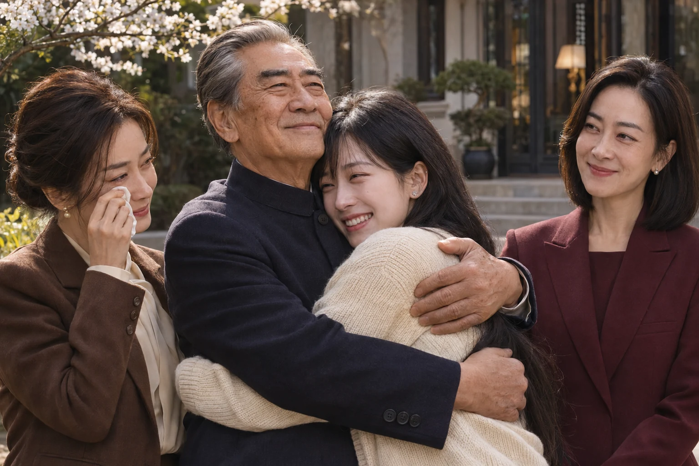

ตอนที่ 14
แพ้พ่าย
คะแนนสอบเกาเขาแบ่งออกเป็นวิชาบังคับ 450 คะแนน วิชาเลือก 300 คะแนน รวมเป็น 750 คะแนน หากผู้เข้าสอบอยากเข้ามหาวิทยาลัยอันดับต้น ๆ ของประเทศ ต้องได้คะแนนสอบ 680-700 คะแนนขึ้นไป หากเลือกคณะที่มีการแข่งขันสูง คะแนนอาจต้องสูงกว่านี้
ซ่งหว่านตั้งใจจะเลือกเรียนบริหาร เพราะชาติก่อนเธอเรียนคณะแพทย์ คิดว่าตัวเองไหว แต่สุดท้ายก็แทบไม่รอด และเรียนไปได้แค่สองปีเธอกลับล้มป่วย สุดท้ายก็เสียชีวิตลงภายในเวลาไม่นาน
ที่สำคัญเธอรู้ว่าพี่ชายทั้งสองเรียนอยู่ที่มหาลัยชิงหวาในคณะบริหาร ง่ายต่อการดึงมาเป็นพวกเพื่อสร้างรอยร้าวให้ลึกยิ่งขึ้น และซ่งอวิ๋นอยากเรียนมหาลัยนี้มาก หากได้เรียนมหาลัยเดียวกัน ถึงจะจัดการง่ายหน่อย
ความคิดด้านลบไม่แสดงออกบนใบหน้างดงาม นัยน์ตาหงส์ใสกระจ่างดุจน้ำในลำธาร
“ไม่ใช่แค่กลัวว่าจะทำได้ไม่ดี ช่วงนี้น้องสามทำงานหนักครับลุงใหญ่ ผมเตือนให้น้องพักบ้าง แต่น้องก็ยังดื้ออยู่” เจียงเซินส่ายศีรษะอย่างอ่อนอกอ่อนใจ ทั้งที่ลุงใหญ่ร่ำรวยขนาดนี้แท้ ๆ แต่น้องสาวคนนี้ไม่เคยขี้เกียจเลย
เพราะแบบนั้นเขาจึงนึกเปรียบเทียบน้องสาวสองคนอยู่ในใจ
“เด็กคนนี้ขยันเหมือนแม่ของเขานั่นละ” ซ่งเหวินยิ้มอย่างภาคภูมิใจ พูดแล้วก็ยังคิดถึงฮวาผิงไม่น้อย
เจียงเซินไม่ต่อบทสนทนายามที่ลุงใหญ่กล่าวถึงฮวาผิง เขารู้สึกตะขิดตะขวงใจอยู่เล็กน้อย เพราะตอนลุงใหญ่เล่าถึงฮวาผิง อีกฝ่ายมักมีรอยยิ้มอบอุ่นรักใคร่ประดับใบหน้าเสมอ แต่เมื่อพูดถึงภรรยาที่ถูกต้องตามกฎหมาย เขาดูไม่มีความสุขเลยสักนิด
“ตรวจคะแนนได้แล้วค่ะ” ซ่งหว่านเอ่ยขัดบทสนทนา ปลายนิ้วเรียวกดแป้นพิมพ์ กรอกข้อมูลเข้าสู่ระบบ
“คนเข้าระบบพร้อมกันเยอะ ค้างแทบทุกปีเลย” เจียงเซินลุ้นตามน้องสาว
“ได้แล้วค่ะ ๆ” ซ่งหว่านเอ่ยอย่างกระตือรือร้น เริ่มตรวจสอบคะแนนของตัวเอง คราวนี้รอคอยไม่นานนัก คะแนนสอบในแต่ละวิชาก็ปรากฏให้เธอเห็น
เจียงเซินเบิกตากว้าง พึมพำคะแนนสอบแต่ละวิชาของน้องสาวอย่างทึ่ง ๆ “ภาษาจีน 148 คณิตศาสตร์ 149 ภาษาอังกฤษ 148 ฟิสิกส์ 95 การเมือง 95 ภูมิศาสตร์ 94 รวม 729 คะแนน”
ซ่งเหวินตกใจไม่ต่างจากหลานชาย เขาจ้องหน้าลูกสาวสลับกับคะแนนสอบเกาเข่าที่เด่นหราอยู่บนหน้าจอ เดิมทีเขาก็รู้อยู่แล้วว่าลูกสาวตนเก่งกาจฉลาดเฉลียว แต่ไม่นึกว่าเธอจะทำคะแนนได้สูงขนาดนี้
“ยินดีด้วยนะน้องสาม ด้วยคะแนนที่เธอทำได้ตอนนี้ ทางมหาลัยต้องเป็นฝ่ายตามง้อเธอแทนแล้วล่ะ” เจียงเซินได้สติกลับมาก็ชื่นชมน้องสาวไม่หยุดไม่หย่อน เขามั่นใจว่าคะแนนสอบของเธอต้องติดท็อปสามของประเทศ และเป็นอันดับหนึ่งของมณฑลอย่างแน่นอน
“ฉัน.. ยังตกใจอยู่เลยค่ะ นี่ฉันฝันอยู่หรือเปล่า” ซ่งหว่านแสร้งละล่ำละลักคล้ายไม่เชื่อสายตาตัวเอง พลางหยิกแขนตัวเองจนเกิดรอยแดง
“อย่าหยิกตัวเอง ดูสิแดงหมดแล้วนะ” เจียงเซินรีบดึงมือเธอออก
“ลูกเก่งมาก พ่อภูมิใจในตัวลูกมากจริง ๆ”
“ขอบคุณค่ะคุณพ่อ”
ชาติก่อนเธอก็ทำให้ดีเช่นนี้ แต่ตอนนั้นเขาห่วงว่าจะสูญเสียสมบัติและทรัพย์สิน จึงไม่ได้แสดงความยินดีกับเธออย่างออกนอกหน้าเช่นนี้ และแน่นอนว่าเธอยังมั่นใจเต็มเปี่ยมว่าคะแนนของเธอมากกว่าซ่งอวิ๋น
“จริงสิครับลุงใหญ่ ลองถามคะแนนของน้องสี่ดูดีไหมครับ เดี๋ยวคุณปู่จะหาว่าลุงใหญ่ไม่ใส่ใจอีก” เจียงเซินนึกถึงคำบอกเล่าของน้องสาม
ปู่ของเขาโกรธมากที่ลุงใหญ่ไม่อวยพรก่อนสอบให้ซ่งอวิ๋น ทั้งที่ลุงใหญ่นอนซมอยู่แท้ ๆ คนที่ต้องใส่ใจถามไถ่ควรเป็นอาอวิ๋นต่างหาก
…
ซ่งอวิ๋นใจสั่นระรัว ขณะที่กรอกข้อมูลตรวจสอบคะแนน เพราะสิ่งที่เธอเห็นในความฝัน คะแนนสอบเกาเข่าของเธอย่ำแย่อย่างยิ่ง ตอนนี้แม้เธอจะมั่นใจว่าตัวเองทำเต็มที่ ตีโจทย์แตกแทบทุกข้อ แต่ก็ยังอดหวั่นใจไม่ได้
“นั่นมัน..” โจวจิ่วยกมือปิดปาก นัยน์ตาคู่งามไหวระริก หลังเห็นคะแนนสอบของลูกสาวปรากฏขึ้นบนหน้าจอคอมพิวเตอร์
“730 คะแนน หลานเป็นอัจฉริยะชัด ๆ” ซ่งเซวียนพึมพำอย่างทึ่ง ๆ เขารู้อยู่แล้วว่าหลานสาวเก่ง ไม่เคยต้องทำให้ใครกังวลเรื่องเรียน ทว่าการทำข้อสอบเกาเขาได้ถึง 730 คะแนนนั้นเป็นเรื่องไม่น่าเชื่อ
โดยทั่วไปแค่ทำได้ 700 คะแนนก็เป็นเรื่องยากราวกับเดินขึ้นกำแพงเมืองจีน
“ระบบรวนหรือเปล่าคะ” ซ่งอวิ๋นเองก็ยังแทบไม่เชื่อสายตาตัวเอง
“รวนที่ไหนกัน เด็กคนนี้นี่จริง ๆ เลย” ซ่งเซียงตีไหล่หลานสาวเบา ๆ ใบหน้าสง่างามเปื้อนรอยยิ้ม เมื่อเหลือบไปมองหน้าผู้เป็นพ่อ ก็เห็นท่านยังตีหน้านิ่งเฉย ทว่านัยน์ตาคมดุของท่านกลับปกปิดความดีใจไว้ไม่มิด
“คุณปู่.. หนูเก่งหรือเปล่าคะ” ซ่งอวิ๋นโถมกายเข้าไปหาซ่งเต๋อ
สุดท้ายซ่งเต๋อก็เก็บอาการไว้ไม่อยู่ ชื่นชมหลานสาวไม่ขาดปาก “เก่งมาก ในบ้านเราไม่เคยมีใครทำข้อสอบเกาเข่าสูงเท่าหลานมาก่อนเลย”
“คุณพ่อพูดถูก พี่ใหญ่กับพี่รองของหลานก็ได้ 700 คะแนนเท่านั้นเองนะ” ซ่งเซียงเอ่ยสำทับ ในสมองคิดว่าจะซื้ออะไรให้เป็นของขวัญฉลองความสำเร็จของหลานสาวดี
“700 คะแนนก็สุดยอดมาก ๆ แล้วนะคะ ตอนนั้นหนูยังคิดอยู่เลยว่าใหญ่กับพี่รองเป็นเทพเจ้า” ซ่งอวิ๋นหัวเราะเสียงใส เธอเคยมองพี่ชายทั้งสองเป็นต้นแบบจริง ๆ แต่ตอนนี้เหลือแค่พี่ใหญ่คนเดียวแล้ว
โจวจิ่วลอบปาดน้ำตา เธอชื่นใจจนบรรยายเป็นคำพูดไม่ถูก โชคดีที่การหย่าร้างระหว่างเธอกับซ่งเหวินไม่รบกวนการสอบของเสี่ยวอวิ๋น ไม่อย่างนั้นเธอคงรู้สึกผิดไปจนตาย

“เรื่องดี ๆ แบบนี้ต้องฉลองแล้วนะครับพ่อ”
“อืม เย็นนี้เราจะจัดงานเลี้ยงเล็ก ๆ ภายในครอบครัว”
ขณะที่พวกเขายิ้มแย้มพูดคุยกันอย่างชื่นมื่น โทรศัพท์สายหนึ่งก็โทรเข้ามาขัดบรรยากาศดี ๆ ซ่งอวิ๋นเอื้อมมือไปคว้าโทรศัพท์ หน้าจอทัชสกรีนปรากฏเบอร์ซ่งเหวิน
ใจจริงเธอไม่อยากรับสาย แต่ปฏิเสธไม่ได้ว่าเขาคือพ่อผู้ให้กำเนิด เธอไม่สามารถปิดกั้นเขาได้ แต่ความสนิทสนม ความเคารพและความรักคงไม่เหมือนเดิมอีกแล้ว
“เปิดลำโพง อาอยากฟังด้วย” ซ่งเซวียนต้องการรู้ว่าพี่ชายของตนอยากโทรมาแสดงความยินดี หรือสร้างความลำบากใจให้หลานสาว
“อืม เปิดลำโพงเถอะ” ซ่งเต๋อเห็นด้วยกับลูกชายคนเล็ก
“เข้าใจแล้วค่ะ” ซ่งอวิ๋นสไลด์หน้าจอทัชสกรีนและกดเปิดลำโพง “ฮัลโหลค่ะพ่อ”
เสียงปลายสายยังเจือความตื่นเต้นเล็กน้อย “อวิ๋นเอ๋อร์ ผลสอบเป็นยังไงบ้างลูก ถ้าได้น้อยก็ไม่เป็นไรนะ ไม่ต้องเครียดเกินไป ต่อให้ไม่ติดมหาลัยชื่อดัง ก็ยังมีมหาลัยเอกชนดี ๆ อีกหลายที่ พ่อส่งลูกเรียนได้”
เขาไม่ได้ตั้งใจดูถูกลูกสาวคนรอง แต่รู้ว่าเรื่องที่เขาก่อ กระทบจิตใจลูก หากเธอทำข้อสอบได้แย่ก็ไม่แปลกอะไร
“ไม่ลำบากคุณพ่อหรอกค่ะ หนูทำคะแนนสอบเกาเข่าได้ดี เข้าชิงหวาได้แน่นอน” ซ่งอวิ๋นกรอกเสียงลงไปในโทรศัพท์ สัมผัสได้ว่าบรรยากาศในห้องเย็นเยียบลงกะทันหัน ผู้ใหญ่ทุกคนต่างไม่พอใจกับคำพูดของซ่งเหวิน
“จริงเหรอลูก ได้กี่คะแนนล่ะ พี่สาวของลูกก็ทำคะแนนได้ดีเหมือนกัน เก่งกันทั้งคู่เลยสิเนี่ย” ซ่งเหวินยังคงไม่ละความพยายามในการทำให้สองพี่น้องสนิทกันไว้ แต่คนฟังควันออกหู
ซ่งเซียงแทบอยากทะลุเข้าไปในโทรศัพท์ แล้วไปถามพี่ชายว่าเกิดอะไรขึ้นกับสมองของเขากันแน่ ทำไมตรรกะผิดเพี้ยนได้ถึงขนาดนี้ เมื่อก่อนก็ดูฉลาด สุขุมและรอบคอบดีแท้ ๆ
“730 คะแนนค่ะ” ซ่งอวิ๋นมองข้ามเรื่องซ่งหว่านไปโดยอัตโนมัติ ทุกครั้งที่อีกฝ่ายติดต่อมาก็มักจะกล่าวถึงซ่งหว่านไม่ว่าจะทางตรงหรือทางอ้อม เธอชินชาและแทบจะไม่เจ็บปวดกับมันแล้ว
สิ้นเสียงซ่งอวิ๋น เสียงบางอย่างตกกระทบพื้นก็ดังตามมาทันที ซ่งเต๋อย่นหัวคิ้ว ก่อนเขาจะกล่าวสิ่งใดออกไป ปลายสายก็ตัดไปเสียก่อน
“อ้าว?” ร่างอ้อนแอ้นจับจ้องหน้าจอทัชสกรีนอย่างงุนงง ไม่ใช่ว่าช็อกจนเป็นลมไปแล้วเหรอ
“ช่างเถอะ พวกเราไปนั่งห้องรับแขกกันดีกว่า” ซ่งเซวียนตบบ่าหลานสาว เขาคิดว่าตัวเองพอจะคาดเดาได้ว่าเสียงของตกเกิดขึ้นได้อย่างไร
“ค่ะอาสาม”
…
เจียงเซินตกใจกับสิ่งที่ได้ยิน ซ่งอวิ๋นทำคะแนนมากกว่าซ่งหว่านเพียงหนึ่งคะแนน แต่ลุงใหญ่คงตกใจมากกว่า เพราะเขาทำโทรศัพท์ร่วงจากมือไปแล้ว
“ลุงใหญ่ โทรศัพท์ดับแล้วครับ” เขาก้มหน้าลงไปเก็บสมาร์ทโฟนบนพื้น ไม่ทันสังเกตว่าใบหน้าซ่งหว่านเปลี่ยนสีไปมาอย่างน่าดูชม
ฝ่ามือข้างลำตัวซ่งหว่านกำแน่นจนสั่นระริก เธอยังไม่อยากเชื่อว่าตัวเองพ่ายแพ้ให้กับคุณหนูผู้เหยียบขี้ไก่ไม่ฝ่ออย่างซ่งอวิ๋น และสิ่งที่ทำให้เธอโมโหจนแทบกระอักเลือดเลยก็คือ อีกฝ่ายเฉือนชนะเธอไปเพียงคะแนนเดียว
แค่คะแนนเดียวเท่านั้น!!
“730 คะแนนเลยงั้นเหรอ ลุงได้ยินผิดไปหรือเปล่า” ซ่งเหวินดึงสติกลับมา มันน่ายินดีที่เขามีลูกสาวที่เก่งกาจถึงสองคน แต่ที่ผ่านมาเขามองว่าเสี่ยวหว่านเก่งกว่ามาตลอด เลยค่อนข้างตกใจที่ลูกสาวคนรองได้คะแนนสูงมากกว่า
“โทรกลับไปอีกครั้งดีไหมคะ คุณพ่อยังไม่แสดงความยินดีกับน้องรองเลยนะคะ” ซ่งหว่านกลืนเลือดลงอกอย่างคับแค้น แต่เธอกลับระงับอารมณ์ได้ดีเยี่ยมเช่นเคย
“จริงด้วย ยังไม่ได้ยินดีเลย พ่อโชคดีจริง ๆ มีลูกสาวเก่งกาจถึงสองคน” เขากดโทรกลับไปอีกครั้ง คราวนี้ลูกสาวไม่ได้รับสาย แต่พ่อของเขาเป็นคนรับสายแทน
“มีอะไร”
“พ่อครับ เสี่ยวอวิ๋นว่างไหมครับ เมื่อกี้ผมตกใจเกินไป โทรศัพท์ตกยังไม่ทันได้อวยพรเลย”
“ตอนนี้อาอวิ๋นไม่ว่าง แกส่งข้อความไว้แล้วกัน” ซ่งเต๋อไม่อยากให้หลานสาวได้ยินอะไรแสลงหูในวันดี ๆ จึงเป็นฝ่ายรับโทรศัพท์แทนหลานสาว